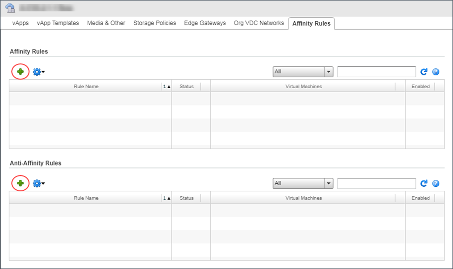

How to use affinity and anti‑affinity rules
Overview
Affinity and anti-affinity rules determine whether or not VMs are kept together as they are moved around within your environment.
Affinity rules keep VMs together on the same host
Anti-affinity rules ensure that VMs are distributed across different hosts
For example, if it is important that your application has very low latency, you can create affinity rules to make sure that the application's VMs are always kept on the same host. If you want your application to be robust in the event of host failures, you can create anti-affinity rules to spread the VMs across multiple hosts.
Important
Excessive use of affinity and anti-affinity rules can cause unpredictable VM and platform performance issues. For example, VMs involved in rules may have an increased likelihood of migrating between hosts simultaneously. Adding a large number of VMs to an affinity rule may cause performance issues if all of the VMs become busy simultaneously. An anti-affinity rule with a large number of VMs may not be honoured if the platform is unable to place the VMs on separate hosts.
UKCloud reserves the right to disable or disregard rules if required for maintenance or platform management.
Intended audience
To complete the steps in this guide you must have access to the UKCloud Portal and vCloud Director.
Creating an affinity or anti-affinity rule
Note
You cannot create affinity or anti-affinity rules in the new vCloud Director 9.1 tenant portal. If your environment uses vCloud Director 9.1, you must first switch to the vCloud Director web console. For more information, see How to switch to the vCloud Director web console from the tenant portal.
To create an affinity or anti-affinity rule:
In vCloud Director, click Administration.

Right-click the VDC that you want to work with and select Open.
Select the Affinity Rules tab.

To create an affinity rule, click the + icon in the Affinity Rules section.
To create an anti-affinity rule, click the + icon in the Anti-Affinity Rules section.

In the Add Affinity Rule or Add Anti-Affinity Rule dialog box, enter a Rule Name.
In the search box, enter the name of a VM that you want to add to the rule.
Select the VM and click the Add button.
Add more VMs as required.
If you don't want the rule to take effect immediately, deselect the Enabled check box.
You can edit the rule later to enable it when you're ready.

When you're done, click OK.
If you selected the Enabled check box, the affinity or anti-affinity rule is applied and the selected VMs are redistributed as required to meet the conditions of the rule.
Next steps
For more information about UKCloud for VMware see the Getting Started Guide for UKCloud for VMware
Feedback
If you have any comments on this document or any other aspect of your UKCloud experience, send them to products@ukcloud.com.